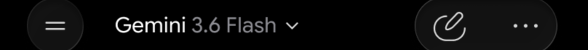

A redesign of the Google Gemini home screen for iOS, built on top of a full recreation of the app. Rebuilding it first is what let me tell Gemini's deliberate constraints apart from its unused space, and the redesign replaces the generic prompt row with two suggestion stacks that read the time of day and the work already in progress.
Gemini can hold a long technical conversation, read a photograph, and write working code. Then you open it and get your first name, a text field, and a row of prompts that would look identical on anyone else's phone.
The greeting uses your first name and nothing else about you.
Nothing before you type suggests the app can read a photograph or write working code.
Every session passes through this screen, and most of it is blank.
From
How might the home screen offer better suggested prompts?
To
How might the home screen use what the app already knows?
The first question takes the prompt row as given. The second asks what the screen is for.
Gemini does not follow Material Design. It runs on its own kit, so almost nothing could be pulled from a library and the recreation became the largest single piece of work in the project. None of it appears in the redesign, and all of it had to exist before the redesign could be measured against anything real.
Gemini runs on Google Sans Flex, rounded where SF Pro Rounded is rounded. I drew the characters as vectors rather than substitute something close.
The set is Gemini's own. Corner rounding and stroke weight are most of what makes the interface feel like this product.
Apple's kit does not carry the ones actually on my phone, so both were built from scratch.
Left to right in the order a session happens, with the redesigned home screen in its place. A beginner asks what a Python if statement does, gets a structured answer with working code, then says the formatting was wrong.


Scroll or drag sideways to follow the flow
Drawing the app at full size turned my opinions about it into arguments I could check. Three of them did not survive the check.
In each case I had written down a problem. Working out what the alternative would cost turned it into a trade I would have made the same way.
First reading
An opaque bar pinned to the bottom, permanently covering a strip of whatever sits behind it.
What it buys
A follow-up never begins by scrolling to find the field again.
The alternative is a bar that scrolls away with the conversation. Asking a follow-up is the most common thing a person does after reading an answer, so that trades a small permanent occlusion for a step added to the most frequent action in the product.

First reading
No handle, no chevron, no label. Judged on discoverability alone the gesture fails.
What it buys
Half the display back, with nothing permanent sitting in the space being returned.
Any visible control would have to live in exactly the space the dismissal is trying to give back. The gesture is carried in from the rest of iOS rather than taught here, and because it tracks the finger it doubles as a way to peek behind the keyboard without closing it.
First reading
A line cannot be read without dragging it into view, and the line you want is often furthest off screen.
What it buys
Code that stays exactly as written, at a size that can still be read.
Wrapping breaks Python, where indentation carries meaning. Shrinking to fit runs into the minimum text sizes accessibility guidelines set. Gemini keeps the code honest and makes the reader work for it, which for code is the right way round.
All three looked like oversights and all three turned out to be trades. The test I had been skipping is what the alternative costs on the screens where the decision is not the problem.

The idea
A control on the code block opens the script fullscreen, with the chat input still reachable underneath.
Why it stayed out
A long line is still a long line. Past a certain length you are panning again.
I built the fix before I questioned it. It helps, and it does not solve the problem, which makes it a better version of the same compromise rather than a different answer to it.

The idea
Landscape gives a long line the wide edge of the display, so the eye travels down the script.
Why it stayed out
Almost nobody reads code on a phone by choice.
I still think it is the better way to read code on a phone. The question I had not asked was who does that in the first place. People write and review code at a desk.
Noticing a problem and establishing that the problem is worth solving are two separate tests, and I had been treating them as one. Setting this aside is what pointed me at the screen everybody sees.
I went back to the screen people see most, the one before any conversation exists. The greeting sits in the middle of the display and almost everything around it is empty.
I watched classmates open their assistants rather than asking them how they use them. Almost nobody read the suggested prompts. People went straight to the field and typed, or into the history to find a thread they had already started.
Reading them costs more attention than typing the question already in your head.
People came back to a thread they had started, but resuming meant remembering it existed and going to look for it.
The app already knows the hour, the location, and the last conversation. None of it reaches the first screen.
The most valuable space on the screen was being scrolled past on the way somewhere else. It is the one part of the app where nothing is being traded away for anything.
Whatever replaced the prompt row was going to take more space than the prompt row did. Three rules decided what was allowed to fill it.
A suggestion is only worth reading if it is more specific than the question you were already going to type.
Anything that looked pasted on top would have been a redesign in my own voice rather than a change to this product.
The stacks take room from the text field. Every card has to carry a reason for being there rather than a category.
Gemini has its own design language and no public kit, so before the redesign could add anything I had to rebuild what was already there. I redrew the type, the colour, the icons and the components in Figma, then extended that same system with the pieces the suggestion stacks needed.
Everything below is taken off the recreation rather than approximated. The colour values are sampled from the screens, the icons are the vectors I drew, and the four type specimens are shown at one shared scale, so the sizes here are the real ratios between them.



Every specimen above is a crop of the recreation, shown at the size it is drawn.
One canvas holds the whole kit: the phone frames, the chat bubbles, the keyboards built from scratch, the drawer, the feedback sheets, and the suggestion cards the redesign added. Every screen in this case study is assembled from these parts rather than drawn once and thrown away.

The greeting stays. Instead of one row of generic prompts there are two labelled stacks. The left reads the moment, meaning the hour, the weather and where you are. The right picks up work already in progress. Each holds four cards.


Each card carries a reason rather than a category. The evening card names Shibam Coffee on Centre Avenue and tells you it closes at eleven. The work card names the Python thread and the thing left to learn in it.
The option
A flat fill would have been easier to read and would have sat unambiguously on top of the screen.
The decision
Glass, so the gradient Gemini already runs behind the home screen stays visible through the card.
This is the decision I went back and forth on longest. A flat fill fought with that gradient and made the cards look pasted onto the interface. Glass is harder to keep legible and it is what makes the addition belong to Gemini rather than to me.
The same screen at three moments. The evening stack moves from coffee to dinner while the work stack holds, then the work stack moves on. Neither waits for the other, which keeps the screen from reading as a slideshow with one hand on the controls.
The fullscreen code view was a real improvement, I liked it, and it was still the wrong thing to spend a redesign on. Rebuilding the app first is what made that judgement possible. Until I had drawn the input bar, the keyboard and the code block at full size, I was reacting to Gemini's decisions rather than understanding what each one had bought.
If I kept going I would work on what happens when the context is wrong. A suggestion that misreads the moment is worse than no suggestion at all, and I never designed the case where a card is simply unhelpful, or how someone would say so and have the screen learn from it.